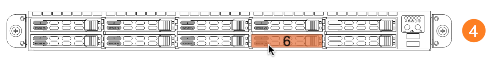
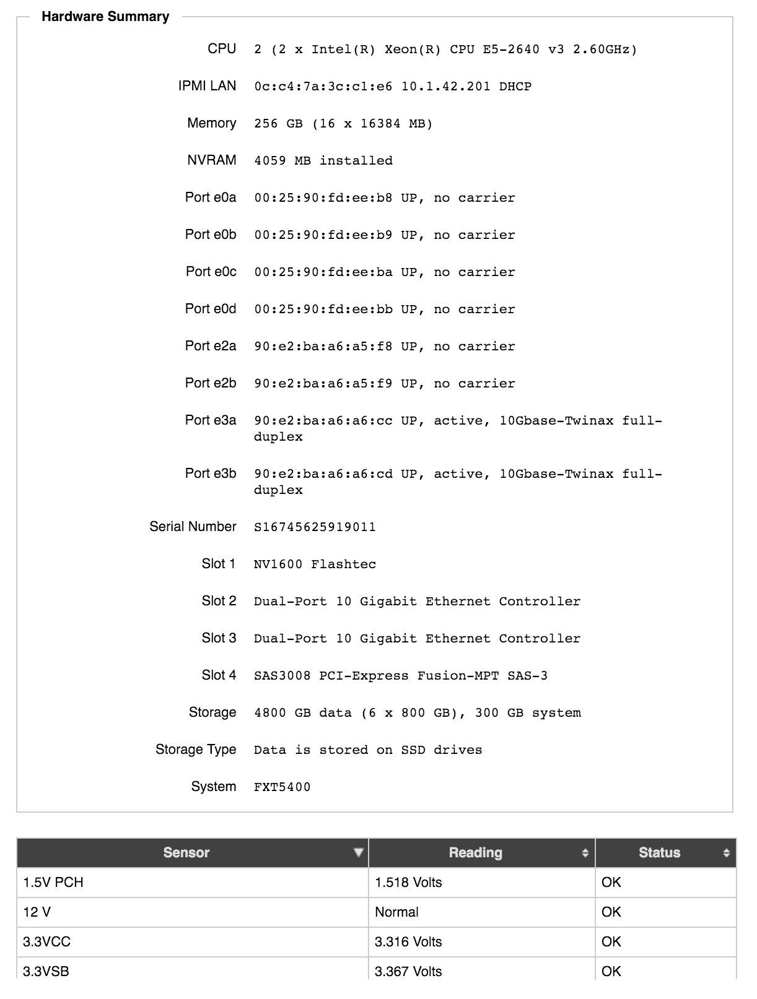

Node Details
The Node Details page shows individual information for an individual FXT node and allows you to customize some settings for the selected node.
Note
The Node Details page does not appear in the sidebar list. You can access it from certain other settings pages by clicking the node name link. It also is linked from the node table on the main dashboard.
Settings pages that have links to the Node Details page:
Use the node selector (2) to choose a different node to display. The Node List link (1) returns you to the FXT Nodes page.
Editing Node Settings
A few node-specific settings can be made on the Node Details page. They appear at the top of the page in the Edit Node section.
If you change a setting in this section, use the Submit button to save changes, or the Revert button to abandon unsaved changes.
Customizing the Node Name
Edit the Node Name field to manually change the node’s name.
Node names can be configured at the cluster level on the Cluster Setup page; however, the automatic name and numbering scheme set there only affects nodes as they are added to the cluster. You can use this field to change the name at any time.
Node names can contain alphanumeric characters, underscores (_), and dashes (-); they cannot contain spaces or other special characters. Names must be at least three characters long.
Custom IPMI Configuration
The IPMI Mode control allows you to set up the node’s Intelligent Platform Management Interface card, which can be used for remote access. Avere Systems recommends configuring IPMI on all cluster nodes.
Note
Instead of configuring individual IPMI cards, you can use the IPMI settings page to configure IPMI cards at the cluster level. Cluster IPMI card settings are applied automatically to new nodes that join the cluster.
If you use a cluster-level IPMI setting as explained in the note above, a custom setting made here on the Node Details page overrides the cluster-level setting for this individual node. However, if you update the cluster-level setting later, individual node settings are overwritten.
Choose from the following options:
- No IPMI Configuration - Does not change the IPMI setting. IPMI cards typically are configured to use DHCP when shipped from Avere. If choosing this setting, make sure that the card still has a valid configuration - if an IPMI card does not have an IP address it cannot be used for system recovery.
- Static - Assign a static address to the IPMI card. When choosing this option, you must provide the IP address, netmask, and router address in dot notation.
- DHCP - Use DHCP to assign the IPMI card’s address.
Read IPMI for more information.
Chassis View
An interactive graphic view (4) appears between the Edit Node panel and the Details panel. The graphic shows the node chassis from the front.
{kind=link}
Note
The chassis view is unavailable for virtual (vFXT) nodes and for 2x00 series models. Some 2x50 models show the image but do not support all of the functions described here.
The chassis view provides drive information, including the following:
- Failed Drive - Failed drives are outlined in red on the diagram.
- Drive Number Identification - Move your mouse pointer over a drive bay on the image to show its drive number. The image above shows drive number 6.
- Physical Drive Locator - Click a drive bay on the chassis diagram to activate a blinking LED on the physical drive bay in the rack. Click the diagram again to turn the light off. This feature can help you identify a node or a specific drive in the rack.
Node Specifications, Configuration, and Statistics
The rest of the Node Details page shows non-editable information about the node.
Network Details
The first section lists IP addresses assigned to the node, including:
- Cluster network IPs - These addresses are always used by this node, unless the cluster network configuration changes.
- Client-facing IPs - These addresses are managed by the cluster’s vservers but currently in use by this node. VServer-assigned IP addresses can move from node to node, even when a home node is set. Read Client Facing Network Settings for more details.
- Node Management IPs - If the node currently is assigned any reserved management IP addresses, they are listed here. Read Node Management Addresses to learn how these addresses are designated and allocated.
Software Information
The Details section includes information about the Avere OS version installed on the node.
- Active Image - The software image that the node is using
- Alternate Image - The software image loaded on the node’s alternate partition. Read the Software Update page to learn more.
Node Performance Statistics
The Performance section shows the node’s average performance currently and over the previous minute. It also shows per-disk performance metrics over the past minute.
Node performance statistics include:
- Number of operations per second
- Cache hit rate percentage
- Latency in milliseconds
Disk performance statistics include:
- Read and write speed in KB per second
- Read and write speed in operations per second
- Read and write latency in microseconds
- Queue length
- Disk utilization percentage
Hardware Summary and Sensor Readings
This section gives information about the physical FXT unit. For vFXT nodes, a subset of this information is provided.
Hardware details include drive information, connection status, serial and model numbers, and other information. The sensor readings table gives the state of all monitored sensors on the chassis.
